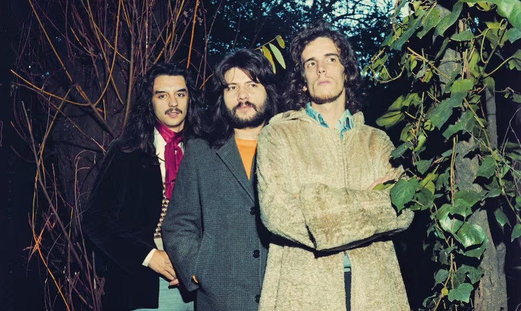
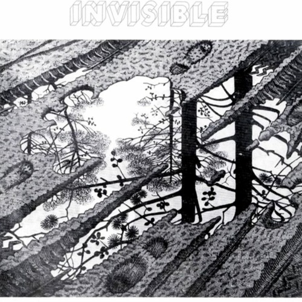
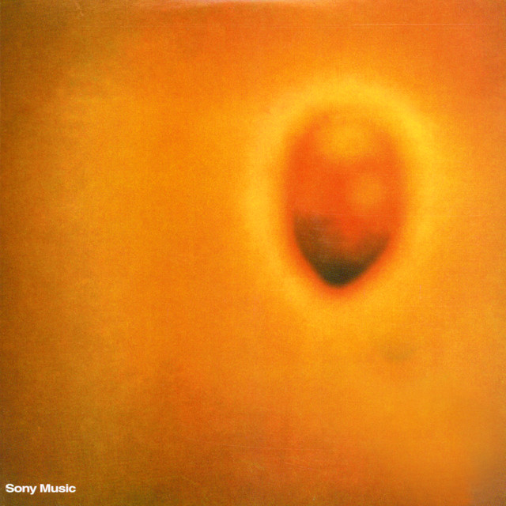
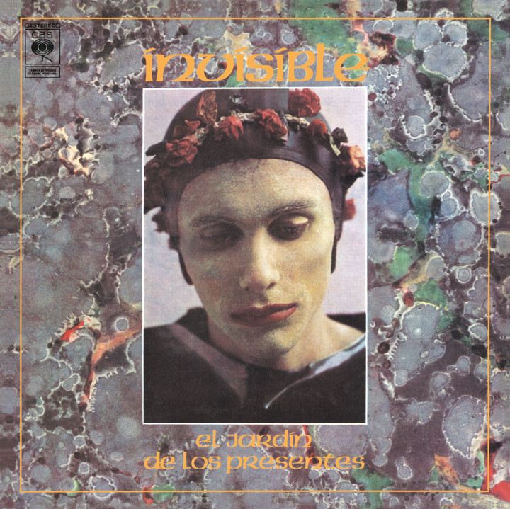
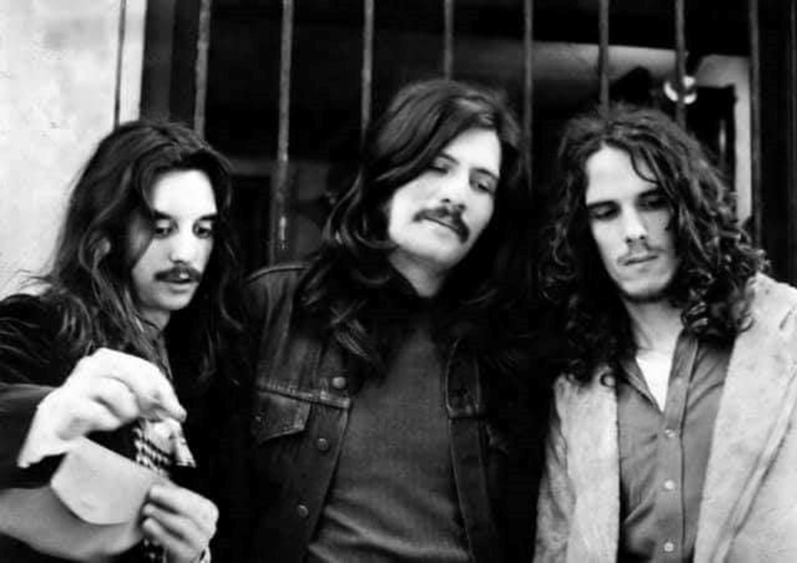

1er Disco de estudio:
Invisible

2do Disco de estudio:
Durazno Sangrando

3er Disco de estudio:
El Jardin de los Presentes
Historia de Invisible
Invisible fue un supergrupo argentino de rock progresivo
latinoamericano y jazz fusión, liderado por Luis Alberto Spinetta,
que actuó entre 1973 y 1977.
Tuvo una primera etapa como trío (1973-1976), integrado por el
propio Spinetta (guitarra y voz), Héctor "Pomo" Lorenzo (batería)
y Carlos Alberto "Machi" Rufino (bajo), y una segunda etapa como
cuarteto (1976-1977), al sumarse Tomás Gubitsch (guitarra).
Grabó tres álbumes, dos de los cuales (Invisible y El jardín de
los presentes) están incluidos en la lista de los 100 mejores de
la historia de rock argentino de la revista Rolling Stone. Sus
temas más destacados son "El anillo del Capitán Beto" (considerada
en el puesto n.º 65 de las 100 mejores del rock argentino por el
sitio Rock.com.ar) y "Durazno sangrando".
"Con Invisible fuimos sacando musica, creando musica a medida
que lo ibamos sacando sin pensar en que caracteristicas luego la
podrian nombrar. Abarcaba desde lo Heavy Metal y hasta tenia
cosas del Jazz, era Invisible a los ojos. Pero no en todos los
sentidos, era invisible y nada mas, pero percibiamos lo que
queriamos hacer sentir."
Luis Alberto Spinetta

Grupo Invisible - 1974